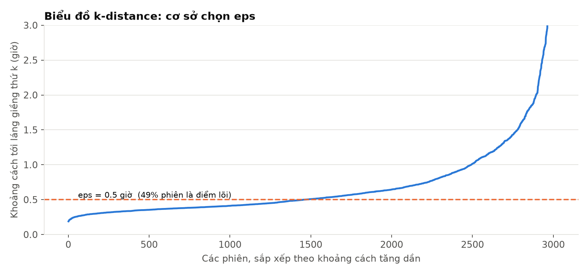
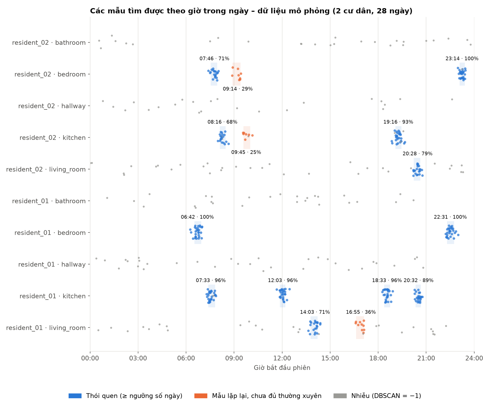
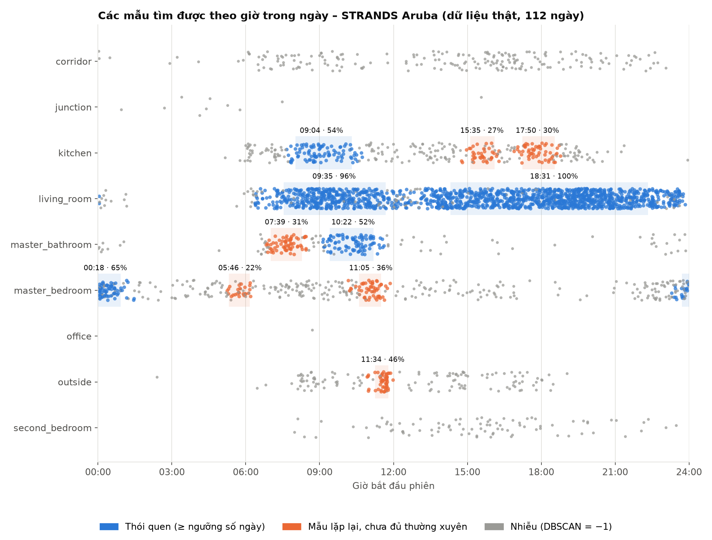
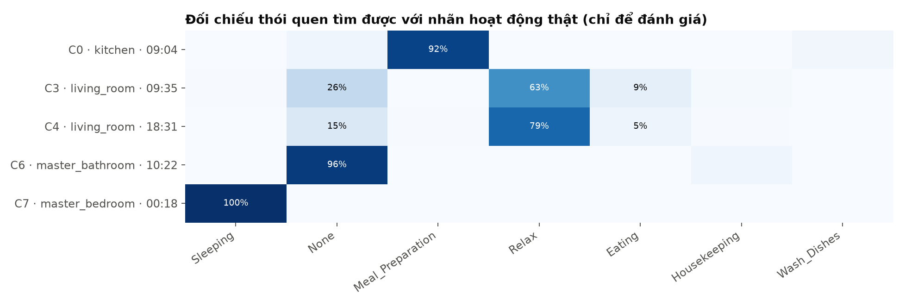

Cư dân 1 ở bếp lúc khoảng 20:32, mỗi lần ~3 phút, lặp lại 25/28 ngày, luôn mở hộp thuốc.
→ thói quen uống thuốc buổi tối
Không có nhãn: không ai ghi lại "tôi đang uống thuốc".
Rời rạc, nhiễu: một hoạt động sinh nhiều sự kiện, xen lẫn đi lại ngẫu nhiên.
Mang tính cá nhân: mỗi người một lịch, không viết luật chung được.
Học thói quen trong nhà thông minh
Mục tiêu và phạm vi
Hai bước, một kỹ thuật
B1
Tiền xử lý dữ liệu
Làm sạch: trùng lặp, timestamp hỏng, giá trị thiếu, tên phòng lộn xộn
Gom sự kiện thành phiên = một lần ở liên tục trong một phòng
Trích đặc trưng: giờ bắt đầu, thời lượng, phòng, cảm biến
B2
Định nghĩa mẫu → tìm mẫu
Định nghĩa thói quen đo được: cùng người, cùng phòng, cùng khung giờ, lặp lại ≥ 50% số ngày
Kỹ thuật: DBSCAN — phân cụm theo mật độ
Mô tả: ai · ở đâu · mấy giờ · bao lâu · bao nhiêu ngày
✕
Ngoài phạm vi: robot, hệ thống nhắc nhở khi quên uống thuốc, điều khiển thiết bị, dự đoán hành động tiếp theo. Đề tài dừng ở việc tìm ra thói quen — đó là nền tảng cho các ứng dụng đó.
Học thói quen trong nhà thông minh
Tài liệu tham khảo
Kế thừa tư tưởng, không sao chép kỹ thuật
Duckworth, Hogg & Cohn (2019). Unsupervised human activity analysis for intelligent mobile robots. Artificial Intelligence 270:67–92 — dự án STRANDS
Duckworth et al. (2019)
Đề tài này
Quan sát
Camera trên robot, khung xương người
Cảm biến môi trường / vị trí trong nhà
Đơn vị
Một đoạn quan sát người
Một phiên: một lần ở liên tục trong một phòng
Biểu diễn
Quan hệ không gian–thời gian định tính
Giờ trên vòng tròn 24h + thời lượng, nhóm theo phòng
Kỹ thuật
LDA (mô hình chủ đề xác suất)
DBSCAN (phân cụm mật độ)
Điểm chung
Học không nhãn từ quan sát dài hạn; nhãn chỉ dùng để đánh giá; mẫu = cấu trúc lặp lại trong dữ liệu
Dữ liệu thật: STRANDS Long-term person activity (Coppola et al., ECAI 2016), tập Aruba trích từ CASAS (Cook, 2010).
Học thói quen trong nhà thông minh
Dữ liệu
Một đề thi có đáp án và một bộ dữ liệu thật
Thí nghiệm 1 · Mô phỏng
Biết trước đáp án để đo độ chính xác
2
cư dân
28
ngày
3.397
sự kiện
12 thói quen cài sẵn, có uống thuốc 20:30
3 mẫu thỉnh thoảng: thể dục 30%, dậy muộn cuối tuần
Người cao tuổi sống một mình, căn hộ thông minh CASAS
112
ngày
161k
phút (vị trí/phút)
10
vị trí
Định dạng thật: location.min, activity.min
Nhãn hoạt động của chuyên gia → chỉ để chấm điểm
Kiểm định mã vị trí: đánh số từ 1; mã 9 = ra ngoài (nơi Leave/Enter_Home)
Học thói quen trong nhà thông minh
Bước 1 · Tiền xử lý
Phiên = một lần ở liên tục trong một phòng
3.397
Sự kiện thô
Log xáo trộn, có lỗi
›
3.339
Làm sạch
Ép kiểu, bỏ trùng & hỏng, điền median theo loại cảm biến, chuẩn hoá tên
›
501
Gom phiên
Mở phiên mới khi lặng > 30 phút hoặc đổi phòng
›
1 dòng
Đặc trưng
Giờ bắt đầu, thời lượng, phòng, cảm biến, ngày
Vì sao tách theo khoảng lặng?
Cửa sổ cố định (mỗi giờ) cắt đôi bữa trưa 11:45–12:30. Khoảng lặng là ranh giới tự nhiên giữa hai hoạt động.
Vì sao tách khi đổi phòng?
Thói quen gắn với địa điểm. Dữ liệu Aruba ghi mỗi phút nên không bao giờ có khoảng lặng: bỏ quy tắc này thì 112 ngày thành 1 phiên.
Dữ liệu thật Aruba
161.280 phút → 15.176 phiên → giữ 3.015 phiên ≥ 5 phút (bỏ các lần đi ngang hành lang).
Học thói quen trong nhà thông minh
Bước 2 · Định nghĩa mẫu
Thế nào là một thói quen?
Một nhóm phiên của cùng một người, ở cùng một phòng, thoả cả ba điều kiện:
1
Cùng khung giờ
Giờ bắt đầu lệch nhau khoảng ≤ 30 phút trên đồng hồ 24 giờ
eps = 0,5 giờ
2
Cùng kiểu
Thời lượng tương tự (3 phút uống thuốc ≠ 30 phút ăn tối)
thời lượng ×2 ≈ lệch 30'
3
Lặp lại đủ nhiều
Xuất hiện ở ít nhất 50% số ngày quan sát
min_support = 50%
~
Đạt 1 + 2 nhưng < 50% ngày → mẫu không thường xuyên (thể dục, lịch cuối tuần)
−1
Không thuộc nhóm nào → nhiễu (đi ngang ngẫu nhiên, hành vi lệch lịch)
Học thói quen trong nhà thông minh
Bước 2 · Kỹ thuật
DBSCAN trong không gian đo bằng giờ
① Giờ bắt đầu
đặt lên đồng hồ tròn 24h: 23:50 và 00:10 chỉ cách 20 phút
② Thời lượng
lấy log: 3' và 6' khác nhiều, 300' và 306' thì không
③ Khoảng cách
≈ số giờ lệch nhau → eps 0,5 = 30 phút
Công thức: x = (R·cosθ, R·sinθ, 0,5·log₂(1+thời lượng)); θ = 2π·giờ/24; R = 24/2π
DBSCAN: phiên có ≥ min_samples phiên khác trong vòng eps là tâm cụm; phiên lẻ loi là nhiễu (−1).
Chạy riêng từng người × từng phòng: thói quen là cá nhân và gắn với địa điểm.
min_samples = max(5, ⌈0,2 × số ngày⌉): "dày" nghĩa là có phiên từ ≥ 20% số ngày (28 ngày → 6; 112 ngày → 23).
Tiêu chí
K-Means
DBSCAN
Biết trước số thói quen
Bắt buộc
Không cần
Hành vi ngẫu nhiên
Ép vào cụm
Nhãn −1
Ý nghĩa tham số
k khó đoán
phút · số ngày
Hình dạng cụm
Cầu lồi
Tuỳ ý

k-distance trên Aruba: eps = 0,5 giờ nằm trước điểm gãy
Học thói quen trong nhà thông minh
Kết quả · Thí nghiệm 1
Tìm lại đủ 12/12 thói quen cài sẵn

12/12
thói quen, giờ lệch < 5 phút so với cài đặt
0,96
ARI so với nhãn thật · độ thuần 100%
164/164
lần đi ngang ngẫu nhiên bị đánh dấu nhiễu
3
mẫu thỉnh thoảng (thể dục 36%, dậy & ăn sáng muộn cuối tuần) không bị nhận nhầm là thói quen
Học thói quen trong nhà thông minh
Đúng ví dụ của đề bài · trên dữ liệu mô phỏng
Thói quen uống thuốc được tìm ra mà không cần ai gán nhãn
Thói quen này do em cài sẵn trong dữ liệu mô phỏng để có đáp án kiểm tra; dữ liệu thật Aruba không có hoạt động uống thuốc.
20:32
giờ điển hình · 80% số lần trong 20:20–20:40
25/28
ngày (89%) — khớp xác suất 85% đã cài
3'
thời lượng trung vị
pillbox
cảm biến đặc trưng của cụm
Cùng ở bếp với bữa tối lúc 18:33, nhưng hai mẫu vẫn tách riêng nhờ khác giờ và khác thời lượng. Việc nhắc nhở khi người đó quên thuốc là ứng dụng xây trên kết quả này — nằm ngoài phạm vi đề tài.
Học thói quen trong nhà thông minh
Kết quả · Thí nghiệm 2 · dữ liệu thật
Aruba: 5 thói quen trong 112 ngày

Thói quen
Giờ
Ngày
Khớp nhãn
Đi ngủ · phòng ngủ
00:18
65%
Sleeping 100%
Nấu bữa sáng · bếp
09:04
54%
Meal_Prep 92%
Phòng khách buổi sáng
09:35
96%
Relax 63%
Phòng tắm buổi sáng
10:22
52%
None 96%
Phòng khách chiều–tối
18:31
100%
Relax 79%
Mẫu thỉnh thoảng: ra ngoài ~11:34 trong 2,5 giờ (46% ngày), chuẩn bị bữa tối ~17:50 (30%).
Học thói quen trong nhà thông minh
Kết quả · Thí nghiệm 2
Đối chiếu với nhãn của chuyên gia

Khớp tốt
Thói quen có giờ rõ ràng: ngủ 100%, nấu ăn 92%. Tổng độ thuần 79%.
Tìm ra điều chưa được gán nhãn
Phòng tắm ~10:22, 52% số ngày, 96% mang nhãn None — thói quen buổi sáng mà người gán nhãn không đặt tên.
Giới hạn
Phòng khách được dùng gần như suốt chiều tối → cụm kéo dài 14:19–22:20 (hiệu ứng nối cụm).
Học thói quen trong nhà thông minh
Đánh giá
So với cách làm ban đầu (baseline)
Baseline: DBSCAN trên toàn bộ 10 đặc trưng đã chuẩn hoá, eps = P90 k-distance, không chia theo phòng.
Độ lệch giờ trong cụm (phút) — càng nhỏ càng trả lời được "lúc mấy giờ"
Mô phỏng · baseline
182
Mô phỏng · đề xuất
10
Aruba · baseline
289
Aruba · đề xuất
115
ARI mô phỏng
ARI Aruba
Độ thuần Aruba
Baseline
0,55
0,03
0,45
Đề xuất
0,96
0,36
0,79
Vì sao baseline thất bại
Giờ chỉ là 2/10 chiều → bị các đặc trưng gần giống nhau lấn át
Gộp bữa sáng của hai người với bữa trưa vào một cụm
Gom 164 lần đi ngang ngẫu nhiên thành một "thói quen" giả
Ablation
Bỏ quy tắc tách phiên khi đổi phòng: mô phỏng mất 1 thói quen (ngủ dậy + ăn sáng bị gộp); Aruba không còn cụm nào (cả 112 ngày thành 1 phiên).
Học thói quen trong nhà thông minh
Đánh giá
Độ nhạy tham số trên dữ liệu thật
eps (giờ)
Tỷ lệ ngày
Thói quen
Nhiễu
Lệch giờ
Độ thuần
0,25
0,2
0
94%
10'
0,77
0,5
0,1
6
18%
205'
0,81
0,5
0,2
5
34%
115'
0,79
0,5
0,3
4
50%
77'
0,77
0,75
0,2
7
17%
207'
0,80
1,0
0,2
7
11%
220'
0,80
eps quá nhỏ (15')
Người thật dao động hơn 15 phút → gần như tất cả thành nhiễu.
eps quá lớn (≥ 45')
Ít nhiễu hơn nhưng cụm bị nối dài > 3 giờ, mất khả năng chỉ ra giờ cụ thể.
Điểm cân bằng
30 phút, 20% số ngày — chọn trước theo ý nghĩa, không tinh chỉnh theo nhãn. Độ thuần ổn định 0,77–0,81 mọi cấu hình. Trên mô phỏng, cả 12 cấu hình đều ra đúng 12 thói quen.
Học thói quen trong nhà thông minh
Nhìn lại
Hạn chế và hướng phát triển
Hạn chế
Một eps cho mọi phòng: thói quen đúng giờ và thói quen kéo dài có mật độ khác nhau → nối cụm ở phòng khách
Chỉ vị trí + thời gian: ăn và xem TV cùng phòng, cùng giờ không phân biệt được nếu thiếu cảm biến thiết bị
Chưa khai thác chu kỳ tuần: dữ liệu Aruba không có ngày tháng thật
Giả định biết người gây ra sự kiện; dữ liệu thật mới có một hộ
Hướng phát triển
HDBSCAN để tự thích nghi mật độ theo từng phòng
Thêm trục ngày trong tuần khi dữ liệu có ngày tháng thật
Theo dõi thói quen theo tháng để phát hiện thay đổi hành vi
Nền tảng cho ứng dụng: nhắc uống thuốc, cảnh báo bất thường ở người cao tuổi
Học thói quen trong nhà thông minh
Kết luận
Từ log cảm biến không nhãn đến "ai · ở đâu · mấy giờ · bao nhiêu ngày"
B1
Phiên = một lần ở liên tục trong một phòng — hoạt động cho cả log sự kiện lẫn dữ liệu vị trí theo phút.
B2
DBSCAN trong không gian "giờ", theo người × phòng; tham số đọc được bằng lời.
Kết quả
12/12 thói quen (có uống thuốc 20:32) trên mô phỏng; ngủ & bữa sáng khớp 92–100% trên dữ liệu thật.
Tái lập: smart-home generate-demo && smart-home run · smart-home download-strands && smart-home run --config configs/strands_aruba.yaml
Em xin cảm ơn — rất mong nhận được câu hỏi của thầy cô.